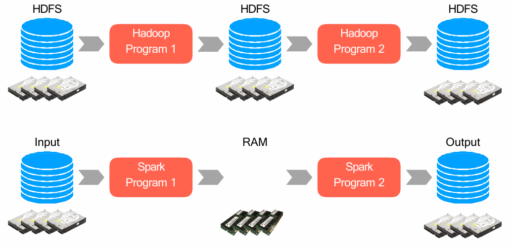

Spark
{kind=link}

Data Flow Models
- Restrict the programming interface → eg in Hadoop only map and reduce must be implemented
- Express complex computations as graphs of high-level operators
- System chooses how to split each operator into tasks and where to run each task
- Runparts multiple times for fault recovery
Biggest example: MapReduce
Limitation of Map Reduce
- MapReduce is great at one-pass computation
- Inefficient for multi-pass algorithms
- No efficient primitives for data sharing
- State between steps goes to distributed file system
- State during shuffle and sort goes through local disk storage
- Communication and I/O in MapReduce is the real bottleneck
Spark Stack
It still uses HDFS ad YARN
- MESOS is another resource manager that we will not use

Spark Core
Written in Scala but APIs for Java, Python and R
Provides basic functionalities, including:
- DAG scheduler (manages the execution plan by DAG graph)
- interaction with HDFS and resource managers (e.g., YARN)
- memory management (access, caching and shuffling - performed in memory in spark)
- Resilient distributed dataset (RDD) is a collection of items distributed across many compute nodes that can be manipulated in parallel and are resilient
- Resilient → if I loose part of the datastructure I can reconstruct it, NOT by replication (there isn’t)
- The output doesn’t overwrite the input RDD
- Distributed → because RDD is built on partitions, each managed independent, saved in different main memory of various nodes
- Spark Core provides many APIs for building and manipulating these collections
- Resilient → if I loose part of the datastructure I can reconstruct it, NOT by replication (there isn’t)
RDD
A resilient distributed dataset (RDD) is a distributed memory abstraction
- Immutable collection of objects spread across the cluster
An RDD is divided into a number of partitions, which are atomic pieces of information
- Partitions of an RDD can be stored on different nodes of a cluster

Lineage
After compiling in Spark the code is executed by JVM.
It provides different APIs, we are using python
file.map(lambda rec: (rec.type, 1))
.reduceByKey(lambda x, y: x + y)
.filter( lambda (type, count): count > 10)- each vertical shape is an RDD → the output of the previous operation
- The blue circles are partitions

Spark allows to implement many other type of operations beyond map and reduce
- Under the hood they are probably implemented as a composition of map and reduce
- much more expressive and flexible → less code
Instead of replicate everything we use the graph of computation
Lineage in Spark refers to the record of transformations applied to a dataset (RDD) from its origin to its current state
- uses recomputation instead of replication
- Immutability is foundamental for lineage otherwise the output will not be the same

Architecture

- each spark application has a spark driver → user code + spark context
- Main logic of the application
- Cluster manager system (resource manager of YARN)
- Cluster worker Node (node manager)
- Each of them can execute Spark Executor (JVM dentro a container YARN) inside a YARN container
- Inside an Executor I can perform several Spark Task (different from Hadoop)
Spark Driver
- runs in a node of the cluster →
main()function
The Spark context is provided by core code and provides all the intelligence of the code:
- Maintaining information about the Spark application → keeps track of the DAG of the application in order to schedule the task
- Analyzing, distributing and scheduling work across the executors
Provide the same task of applications master of Hadoop
- acutally there is an application master since we are using YARN

- In the pyspark shell a SparkContext is created automatically on start (sc) → just for small testing (few lines, like python shell)
- In a Python script including a Spark application you need to create it as soon as necessary:
frompyspark import SparkConf, SparkContext conf = SparkConf() # initialize SparkConf conf.setAppName("My Spark App") # initialize a new SparkContext with Spark configuration sc = SparkContext(conf=conf)
Executors
Responsible for two things:
- Executing code assigned to it by the driver
- Reporting the state of the computation on that executor back to the driver
Programming
Spark Submit and Flags
You submit Spark jobs using spark-submit
- Use the --master flag to specify the execution mode for the Spark application (driver + executors)
- local: run in local mode as a single JVM process, using a single core
- local[N]: run in local mode with Ncores
- local[*]: run in local mode and use as many cores as the machine has (this is conceptually similar to “uber” mode in Hadoop)
- yarn: use the whole cluster through YARN (not local)
- Use the --deploy-mode flag to the spark-submit command to specify how the Spark Driver should run
- client: the Spark Driver runs as part of the spark submit process. The default and mainly used for testing. If the user terminates (Ctrl+C) the spark-submit command or the machine fails, the Driver and the whole Spark application fails.
- cluster: the Spark Driver runs as a separate process, within the Application Master container if YARN is used. After Ctrl+C the application will be still alive
Creating an RDD
Two way to create an RDD:
- Use the
parallelizemethod on a SparkContext- turns a single node collection into a parallel collection
- you can explicitly suggest the number of partitions
numbers = [1,2,3,4,5] rdd_numbers = sc.parallelize(numbers) print(rdd_numbers) words = "I love Spark".split(" ") rdd_words = sc.parallelize(words, 2) # Suggested two partitions print(rdd_words)
- Created from external storage → file taken from HDFS
- Usually, if the file is taken from HDFS, Sparks creates as many partitions as the number of blocks in HDFS
rdd = sc.textFile("file.txt", 2) # local path, suggested partions
Spark Programming Model
Each circle is an operation implemented by higher order function (argument a function or output a function)
- Based on parallelizable operators, functions that execute user-defined functions in parallel
- Data flow is composed of any number of data sources, operators, and data sinks by connecting their inputs and outputs
- Job description based on directed acyclic graph (DAG)

Two types of operations
- Transformation: takes RDD as input and create a new RDD as output
- set to be lazy: only computed when an action requires a result to be returned to the driver program
- Actions: takes an RDD as input (leaf of the DAG), but do not output RDD
- Produce a single value to print in the console, a data structure (native data-structure) or a file that will be written on HDFS or local file system
- triggers the computation
Actions:
collectreturns all the elements of the RDD as an array at the driver
firstreturns the first value in the RDD
takereturns an array with the first n elements of the RDD- Variations on this function:
takeOrderedandtakeSample
- Variations on this function:
countreturns the number of elements in the dataset
maxandminreturn the maximum and minimum values, respectively.
reduceaggregates the elements of the dataset using a given function.- The given function should be commutative and associative so that it can be computed correctly in parallel.
- Not to confuse with the one of hadoop (not distinguish among keys) → they are equivalent if I have a single key
saveAsTextFilewrites the elements of an RDD as one or more part-xxxxx text files (one for each partition). It wants a directory path as argument.- Local filesystem, HDFS or any other Hadoop-supported file system
numbers = sc.parallelize([1, 2, 2, 2, 1, 1, 4, 3, 3, 5, 5])
numbers.collect() # triggers execution on ALL elements, takes time
# list [1, 2, 2, 2, 1, 1, 4, 3, 3, 5, 5]
numbers.first() # int 1
numbers.take(4) # triggers execution on 4 elements, good for debug
# list [1, 2, 2, 2]
numbers.takeOrdered(4) # list [1, 1, 1, 2]
withReplacement = True, numberToTake = 4, randomSeed = 123456
numbers.takeSample(withReplacement, numberToTake, randomSeed)
# list [1, 5, 2, 5]
numbers.count() # int 11
numbers.countByValue() # dict {1: 3, 2: 3, 4: 1, 3: 2, 5: 2}
numbers.max() # int 5
numbers.min() # int 1
numbers.reduce(lambda x, y: x + y) # int 29
numbers.saveAsTextFile("numbers")
# then, you may check contents of files 'numbers/part-xxxxx'
Generic RDD Transformation
In generic transformation there is not any key relations
distinct→ removes duplicates from the RDD
filter→ returns the RDD records that match some predicate (returning true or false)numbers = sc.parallelize([1,2,2,2,3,3,4,5,5,5,5]) distinct_numbers = numbers.distinct() print(distinct_numbers.collect()) # this is an action [2, 4, 1, 3, 5] even_numbers = distinct_numbers.filter(lambda x: x % 2 == 0) print(even_numbers.collect()) # this is an action [2, 4]
mapandflatMapapply a given function to each RDD element independently- map transforms an RDD of length n into another RDD of length n.
- flatMap allows returning 0, 1 or more elements from map function → flat the output
data = sc.parallelize(range(10)) squared_data = data.map(lambda x: x * x) print(squared_data.collect()) # this is an action [ 0, 1, 4, 9, 16, 25, 36, 49, 64, 81] squared_cubed_data_1 = data.map(lambda x: (x * x, x * x * x)) print(squared_cubed_data_1.collect()) # this is an action [ ( 0, 0), (1, 1), (4, 8), (9, 27), (16, 64), (25, 125), (36, 216), (49, 343), (64, 512), (81, 729)] squared_cubed_data_2 = data.flatMap(lambda x: (x * x, x * x * x)) print(squared_cubed_data_2.collect()) # this is an action [ 0, 0, 1, 1, 4, 8, 9, 27, 16, 64, 25, 125, 36, 216, 49, 343, 64, 512, 81, 729]
sortBy
union
intersection
words = sc.parallelize("nel mezzo del cammin di nostra vita".split(" "))
sorted_words = words.sortBy(lambda w: len(w))
print(sorted_words.collect()) # [' di' , 'nel', 'del', 'vita', 'mezzo', 'cammin', 'nostra']
data1 = sc.parallelize(range(0,7)), data2 = sc.parallelize(range(3,10))
union = data1.union(data2)
print(union.collect()) # [0, 1, 2, 3, 4, 5, 6, 3, 4, 5, 6, 7, 8, 9]
intersection = data1.intersection(data2)
print(intersection.collect()) # [3, 4, 5, 6]
Key-Value RDD Transformation
To create a key-value RDD, we have tree ways:
mapover your current RDD to a basic key-value structure
- Use the
keyByto create a key from the current value
- Use the
zipto zip together two RDDs of the same length
words = sc.parallelize("nel mezzo del cammin di nostra vita".split(" "))
# FIRST WAY
keywords1 = words.map(lambda w: (w, 1)) print(keywords1.collect()) # [(‘nel’, 1), ('mezzo’, 1), ('del’, 1), ('cammin’, 1), (‘di’, 1), ('nostra’, 1), ('vita’, 1)]
# SECOND WAY
keywords2 = words.keyBy(lambda w: w[0].upper())
print(keywords2.collect()) # [(‘N’, ‘nel'), ('M', 'mezzo'), ('D', 'del'), ('C', 'cammin'), ('D', 'di'), ('N', 'nostra'), ( ' V', 'vita')]
# THIRD WAY
numbers = sc.parallelize(range(7))
keywords3 = words.zip(numbers)
print(keywords3.collect()) # [(‘Nel', 0), ('mezzo', 1), ('del', 2), ('cammin', 3), ('di', 4), ('nostra', 5), ('vita', 6)]
keysandvaluesextract keys and values from the RDD
words = sc.parallelize("nel mezzo del cammin di nostra vita".split(" "))
keywords =words.keyBy(lambda w: w[0])
k = keywords.keys() # ['n', 'm', 'd', 'c', 'd', 'n', 'v']
v = keywords.values() # ['nel', 'mezzo', 'del', 'cammin', 'di', 'nostra', 'vita']reduceByKeycombines values with the same key- takes a function as input and uses it to combine values of the same key
- is the reduce of hadoop
sortByKeyreturns an RDD sorted by the key
words = sc.parallelize("fare o non fare non esiste provare".split(" "))
wordcount = words.map(lambdaw: (w, 1)).reduceByKey(lambda x, y: x + y)
print(wordcount.collect()) # [('provare', 1), ('fare', 2), ('non', 2), ('esiste', 1), ('o', 1)]
# ??? shuffle and sort in between ???
sorted_wordcount = wordcount.sortByKey()
print(sorted_wordcount.collect()) # [('esiste', 1), ('fare', 2), ('non', 2), ('o', 1), ('provare', 1)]joinperforms an inner-join on the keyfullOuterJoin,leftOuterJoin,rightOuterJoin,cartesian
Anatomy of a Spark Job
A Spark application doesn’t “do anything” until the driver program calls an action (lazy evaluation)
- Each action is called by the driver program of a Spark application
- Each Spark Job corresponds to one action

Spark Job → any set of transformations triggered by an action
Two way of dividing the transformations:
- Narrow transformation → need only one partitions to be executed
- map operation
- Wide transformation → requires several partitions to be executed
- requires a shuffle and sort phase before
- reduceByKey
A Job is formed of more stages
- the beginning of a stage is marked by a wide transformation
- formed of a first wide transform and then all narrows until another wide
- they need more input partitions RDD
A stage consists of tasks, which are the smallest execution unit
- Each task represents one local computation → passed to one executor, no need to communicate with other
- All of the tasks in one stage execute the same code but on different partitions of the data
In spark each Task works on a parition of the RDD
- as many task as the number of partitions inside the RDD
- execute inside Executors (JVM) with resources in Container
- Two tasks can be executed inside the same Executors
N.B.
An action will be the last thing of the last task of the last stage of one job
The first operation of the first task of a stage will be a wide transformation, all the others narrows
RDD Persistence (caching)
By default, each transformed RDD may be recomputed each time an action is run on it
- Spark also supports the persistence (or caching) of RDDs in memory across operations for rapid reuse
- When RDD is persisted, each node stores any partitions that it computes in memory and reuses them in other actions on that dataset (or datasets derived from it)
- This allows future actions to be much faster (even 100x)
- To persist RDD, use
persist()orcache()methods- Using persist() we can specify the level of persistence: MEMORY_ONLY, MEMORY_AND_DISK, DISK_ONLY
- cache() instead is equivalent to persist() in memory only
- Spark’s cache is fault-tolerant: a lost RDD partition is automatically recomputed using the transformations that originally created it
- Key tool for iterative algorithms
History Server
or application UI that will be destroyed after the app terminates
The number of file saveText… will depends on the number of partitions of the RDD
repartition(num) produces an output RDD having the number of partitions specified as
argument